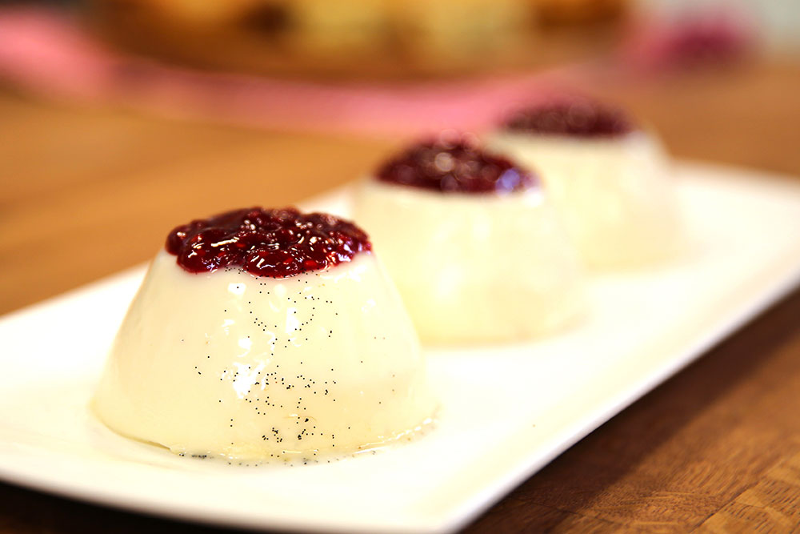

Panna Cotta Malzemeleri
- 250 ml. süt
- 250 ml. krema
- 1 su bardağı toz şeker (150 gr.)
- 1 adet çubuk vanilya
- 3 adet yaprak jelatin
Frambuaz Sos için Malzemeler
- 250 gr. frambuaz
- ½ su bardağı toz şeker
Panna Cotta Yapılışı
Süt, krema, şeker ve vanilyayı bir sos tenceresine alıp karıştırarak kaynatın.
Jelatinleri ayrı bir kapta soğuk suda çözdürün.
Kaynayan sıvıyı kenara alın ve jelatinleri içerisine ilave edip karıştırıp, jelatinlerin sıvıya homojen bir şekilde dağılmasını sağlayın.
Panna cotta harcını kaselere bölüştürün. 2-3 saat buzdolabında kıvam alıncaya kadar soğutup, dilerseniz ters çevirerek, dilerseniz kasenin içinde servis edin.
Frambuaz Sos Yapılışı
Frambuaz sos için, frambuaz ve şekeri bir sos tenceresine alın ve şeker eriyinceye kadar karıştırıp, kaynamaya bırakın.
Frambuazlar tamamen püre olduğunda spatulayla ezin ve soğutun. Panna Cottanın üzerinde servis edin.
Afiyet Olsun